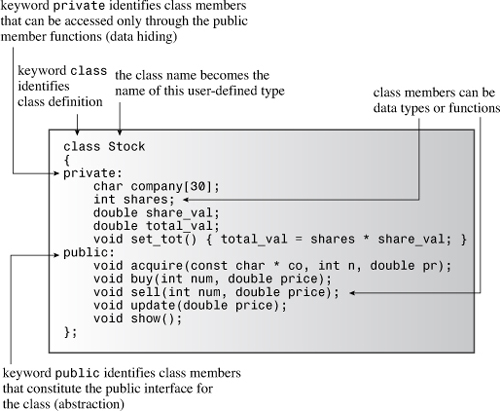
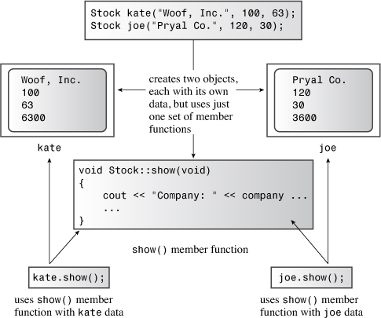
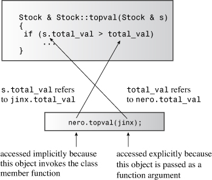
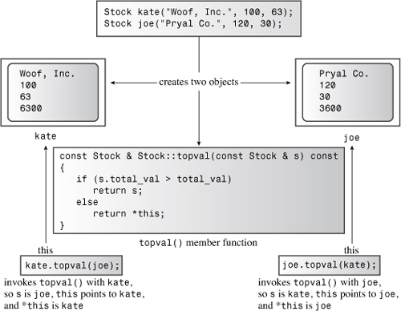

In this chapter you’ll learn about the following:
• Procedural and object-oriented programming
• The concept of classes
• How to define and implement a class
• Public and private class access
• Class data members
• Class methods (also called class function members)
• Creating and using class objects
• Class constructors and destructors
• const member functions
• The this pointer
• Creating arrays of objects
• Class scope
• Abstract data types
Object-oriented programming (OOP) is a particular conceptual approach to designing programs, and C++ has enhanced C with features that ease the way to applying that approach. The following are the most important OOP features:
• Abstraction
• Encapsulation and data hiding
• Polymorphism
• Inheritance
• Reusability of code
The class is the single most important C++ enhancement for implementing these features and tying them together. This chapter begins an examination of classes. It explains abstraction, encapsulation, and data hiding, and shows how classes implement these features. It discusses how to define a class, provide a class with public and private sections, and create member functions that work with the class data. Also this chapter acquaints you with constructors and destructors, which are special member functions for creating and disposing of objects that belong to a class. Finally, you meet the this pointer, an important component of some class programming. The following chapters extend this discussion to operator overloading (another variety of polymorphism) and inheritance, the basis for reusing code.
Although in this book we have occasionally explored the OOP perspective on programming, we’ve usually stuck pretty close to the standard procedural approach of languages such as C, Pascal, and BASIC. Let’s look at an example that clarifies how the OOP outlook differs from that of procedural programming.
As the newest member of the Genre Giants softball team, you’ve been asked to keep the team statistics. Naturally, you turn to your computer for help. If you were a procedural programmer, you might think along these lines:
Let’s see, I want to enter the name, times at bat, number of hits, batting averages (for those who don’t follow baseball or softball, the batting average is the number of hits divided by the player’s official number of times at bat; an at bat terminates when a player gets on base or makes an out, but certain events, such as getting a walk, don’t count as official times at bat), and all those other great basic statistics for each player. Wait, the computer is supposed to make life easier for me, so I want to have it figure out some of that stuff, such as the batting average. Also I want the program to report the results. How should I organize this? I guess I should do things right and use functions. Yeah, I’ll make main() call a function to get the input, call another function to make the calculations, and then call a third function to report the results. Hmmm, what happens when I get data from the next game? I don’t want to start from scratch again. Okay, I can add a function to update the statistics. Golly, maybe I’ll need a menu in main() to select between entering, calculating, updating, and showing the data. Hmmm...how am I going to represent the data? I could use an array of strings to hold the players’ names, another array to hold the at bats for each player, yet another array to hold the hits, and so on. No, that’s dumb. I can design a structure to hold all the information for a single player and then use an array of those structures to represent the whole team.
In short, with a procedural approach, you first concentrate on the procedures you will follow and then think about how to represent the data. (So that you don’t have to keep the program running the whole season, you probably also want to be able to save data to a file and read data from a file.)
Now let’s see how your perspective changes when you don your OOP hat (in an attractive polymorphic design). You begin by thinking about the data. Furthermore, you think about the data not only in terms of how to represent it, but in terms of how it’s to be used:
Let’s see, what am I keeping track of? A ball player, of course. So I want an object that represents the whole player, not just her batting average or times at bat. Yeah, that’ll be my fundamental data unit, an object representing the name and statistics for a player. I’ll need some methods to handle this object. Hmmm, I guess I need a method to get basic information into this unit. The computer should calculate some of the stuff, like the batting averages—I can add methods to do calculations. And the program should do those calculations automatically, without the user having to remember to ask to have them done. Also I’ll need methods for updating and displaying the information. So the user gets three ways to interact with the data: initialization, updating, and reporting. That’s the user interface.
In short, with an OOP approach, you concentrate on the object as the user perceives it, thinking about the data you need to describe the object and the operations that will describe the user’s interaction with the data. After you develop a description of that interface, you move on to decide how to implement the interface and data storage. Finally, you put together a program to use your new design.
Life is full of complexities, and one way we cope with complexity is to frame simplifying abstractions. You are a collection of more than an octillion atoms. Some students of the mind would say that your mind is a collection of several semiautonomous agents. But it’s much simpler to think of yourself as a single entity. In computing, abstraction is the crucial step of representing information in terms of its interface with the user. That is, you abstract the essential operational features of a problem and express a solution in those terms. In the softball statistics example, the interface describes how the user initializes, updates, and displays the data. From abstraction, it is a short step to the user-defined type, which in C++ is a class design that implements the abstract interface.
Let’s think a little more about what constitutes a type. For example, what is a nerd? If you subscribe to the popular stereotype, you might think of a nerd in visual terms—thick, black-rimmed glasses, pocket protector full of pens, and so on. After a little reflection, you might conclude that a nerd is better defined operationally—for example, in terms of how he or she responds to an awkward social situation. You have a similar situation, if you don’t mind stretched analogies, with a procedural language such as C. At first, you tend to think of a data type in terms of its appearance—how it is stored in memory. A char, for example, is 1 byte of memory, and a double is often 8 bytes of memory. But a little reflection leads you to conclude that a data type is also defined in terms of the operations that can be performed on it. For example, the int type can use all the arithmetic operations. You can add, subtract, multiply, and divide integers. You can also use the modulus operator (%) with them.
On the other hand, consider pointers. A pointer might very well require the same amount of memory as an int. It might even be represented internally as an integer. But a pointer doesn’t allow the same operations that an integer does. You can’t, for example, multiply two pointers by each other. The concept makes no sense, so C++ doesn’t implement it. Thus, when you declare a variable as an int or as a pointer-to-float, you’re not just allocating memory—you are also establishing which operations can be performed with the variable. In short, specifying a basic type does three things:
• It determines how much memory is needed for a data object.
• It determines how the bits in memory are interpreted. (A long and a float might use the same number of bits in memory, but they are translated into numeric values differently.)
• It determines what operations, or methods, can be performed using the data object.
For built-in types, the information about operations is built in to the compiler. But when you define a user-defined type in C++, you have to provide the same kind of information yourself. In exchange for this extra work, you gain the power and flexibility to custom fit new data types to match real-world requirements.
A class is a C++ vehicle for translating an abstraction to a user-defined type. It combines data representation and methods for manipulating that data into one neat package. Let’s look at a class that represents stocks.
First, you have to think a bit about how to represent stocks. You could take one share of stock as the basic unit and define a class to represent a share. However, that implies that you would need 100 objects to represent 100 shares, and that’s not practical. Instead, you can represent a person’s current holdings in a particular stock as a basic unit. The number of shares owned would be part of the data representation. A realistic approach would have to maintain records of such things as initial purchase price and date of purchase for tax purposes. Also it would have to manage events such as stock splits. That seems a bit ambitious for a first effort at defining a class, so you can instead take an idealized, simplified view of matters. In particular, you can limit the operations you can perform to the following:
• Acquire stock in a company.
• Buy more shares of the same stock.
• Sell stock.
• Update the per-share value of a stock.
• Display information about the holdings.
You can use this list to define the public interface for the stock class. (And you can add additional features later if you’re interested.) To support this interface, you need to store some information. Again, you can use a simplified approach. For example, don’t worry about the U.S. practice of evaluating stocks in multiples of eighths of a dollar. (Apparently the New York Stock Exchange must have seen this simplification in a previous edition of the book because it has decided to change over to the system used here.) Here’s a list of information to store:
• Name of company
• Number of stocks owned
• Value of each share
• Total value of all shares
Next, you can define the class. Generally, a class specification has two parts:
• A class declaration, which describes the data component, in terms of data members, and the public interface, in terms of member functions, termed methods
• The class method definitions, which describe how certain class member functions are implemented
Roughly speaking, the class declaration provides a class overview, whereas the method definitions supply the details.
Developing a class and a program using it requires several steps. Rather than take them all at once, let’s break up the development into smaller stages. Typically, C++ programmers place the interface, in the form of a class definition, in a header file and place the implementation, in the form of code for the class methods, in a source code file. So let’s be typical. Listing 10.1 presents the first stage, a tentative class declaration for a class called Stock. The file uses #ifndef, and so on, as described in Chapter 9, “Memory Models and Namespaces,” to protect against multiple file inclusions.
To help identify classes, this book follows a common, but not universal, convention of capitalizing class names. You’ll notice that Listing 10.1 looks like a structure declaration with a few additional wrinkles, such as member functions and public and private sections. We’ll improve on this declaration shortly (so don’t use it as a model), but first let’s see how this definition works.
// stock00.h -- Stock class interface
// version 00
#ifndef STOCK00_H_
#define STOCK00_H_
#include <string>
class Stock // class declaration
{
private:
std::string company;
long shares;
double share_val;
double total_val;
void set_tot() { total_val = shares * share_val; }
public:
void acquire(const std::string & co, long n, double pr);
void buy(long num, double price);
void sell(long num, double price);
void update(double price);
void show();
}; // note semicolon at the end
#endif
You’ll get a closer look at the class details later, but first let’s examine the more general features. To begin, the C++ keyword class identifies the code in Listing 10.1 as defining the design of a class. (In this context the keywords class and typename are not synonymous the way they were in template parameters; typename can’t be used here.) The syntax identifies Stock as the type name for this new class. This declaration enables you to declare variables, called objects, or instances, of the Stock type. Each individual object represents a single holding. For example, the following declarations create two Stock objects called sally and solly:
Stock sally;
Stock solly;
The sally object, for example, could represent Sally’s stock holdings in a particular company.
Next, notice that the information you decided to store appears in the form of class data members, such as company and shares. The company member of sally, for example, holds the name of the company, the share member holds the number of shares Sally owns, the share_val member holds the value of each share, and the total_val member holds the total value of all the shares. Similarly, the desired operations appear as class function members (or methods), such as sell() and update(). A member function can be defined in place—for example, set_tot()—or it can be represented by a prototype, like the other member functions in this class. The full definitions for the other member functions come later in the implementation file, but the prototypes suffice to describe the function interfaces. The binding of data and methods into a single unit is the most striking feature of the class. Because of this design, creating a Stock object automatically establishes the rules governing how that object can be used.
You’ve already seen how the istream and ostream classes have member functions, such as get() and getline(). The function prototypes in the Stock class declaration demonstrate how member functions are established. The iostream header file, for example, has a getline() prototype in the istream class declaration.
Also new are the keywords private and public. These labels describe access control for class members. Any program that uses an object of a particular class can access the public portions directly. A program can access the private members of an object only by using the public member functions (or, as you’ll see in Chapter 11, “Working with Classes,” via a friend function). For example, the only way to alter the shares member of the Stock class is to use one of the Stock member functions. Thus, the public member functions act as go-betweens between a program and an object’s private members; they provide the interface between object and program. This insulation of data from direct access by a program is called data hiding. (C++ provides a third access-control keyword, protected, which we’ll discuss when we cover class inheritance in Chapter 13, “Class Inheritance.”) (See Figure 10.1.) Whereas data hiding may be an unscrupulous act in, say, a stock fund prospectus, it’s a good practice in computing because it preserves the integrity of the data.

A class design attempts to separate the public interface from the specifics of the implementation. The public interface represents the abstraction component of the design. Gathering the implementation details together and separating them from the abstraction is called encapsulation. Data hiding (putting data into the private section of a class) is an instance of encapsulation, and so is hiding functional details of an implementation in the private section, as the Stock class does with set_tot(). Another example of encapsulation is the usual practice of placing class function definitions in a separate file from the class declaration.
Note that data hiding not only prevents you from accessing data directly, but it also absolves you (in the roll as a user of the class) from needing to know how the data is represented. For example, the show() member displays, among other things, the total value of a holding. This value can be stored as part of an object, as the code in Listing 10.1 does, or it can be calculated when needed. From the standpoint of using the class, it makes no difference which approach is used. What you do need to know is what the different member functions accomplish; that is, you need to know what kinds of arguments a member function takes and what kind of return value it has. The principle is to separate the details of the implementation from the design of the interface. If you later find a better way to implement the data representation or the details of the member functions, you can change those details without changing the program interface, and that makes programs much easier to maintain.
You can declare class members, whether they are data items or member functions, either in the public or the private section of a class. But because one of the main precepts of OOP is to hide the data, data items normally go into the private section. The member functions that constitute the class interface go into the public section; otherwise, you can’t call those functions from a program. As the Stock declaration shows, you can also put member functions in the private section. You can’t call such functions directly from a program, but the public methods can use them. Typically, you use private member functions to handle implementation details that don’t form part of the public interface.
You don’t have to use the keyword private in class declarations because that is the default access control for class objects:
class World
{
float mass; // private by default
char name[20]; // private by default
public:
void tellall(void);
...
};
However, this book explicitly uses the private label in order to emphasize the concept of data hiding.
We still have to create the second part of the class specification: providing code for those member functions represented by a prototype in the class declaration. Member function definitions are much like regular function definitions. Each has a function header and a function body. Member function definitions can have return types and arguments. But they also have two special characteristics:
• When you define a member function, you use the scope-resolution operator (::) to identify the class to which the function belongs.
• Class methods can access the private components of the class.
Let’s look at these points now.
First, the function header for a member function uses the scope-resolution operator (::) to indicate to which class the function belongs. For example, the header for the update() member function looks like this:
void Stock::update(double price)
This notation means you are defining the update() function that is a member of the Stock class. Not only does this identify update() as a member function, it means you can use the same name for a member function for a different class. For example, an update() function for a Buffoon class would have this function header:
void Buffoon::update()
Thus, the scope-resolution operator resolves the identity of the class to which a method definition applies. We say that the identifier update() has class scope. Other member functions of the Stock class can, if necessary, use the update() method without using the scope-resolution operator. That’s because they belong to the same class, making update() in scope. Using update() outside the class declaration and method definitions, however, requires special measures, which we’ll get to soon.
One way of looking at method names is that the complete name of a class method includes the class name. Stock::update() is called the qualified name of the function. A simple update(), on the other hand, is an abbreviation (the unqualified name) for the full name—one that can be used just in class scope.
The second special characteristic of methods is that a method can access the private members of a class. For example, the show() method can use code like this:
std::cout << "Company: " << company
<< " Shares: " << shares << endl
<< " Share Price: $" << share_val
<< " Total Worth: $" << total_val << endl;
Here company, shares, and so on are private data members of the Stock class. If you try to use a nonmember function to access these data members, the compiler stops you cold in your tracks. (However, friend functions, which Chapter 11 discusses, provide an exception.)
With these two points in mind, we can implement the class methods as shown in Listing 10.2. We’ve placed them in a separate implementation file, so the file needs to include the stock00.h header file so that compiler can access the class definition. To provide more namespace experience, the code uses the std:: qualifier in some methods and using declarations in others.
// stock00.cpp -- implementing the Stock class
// version 00
#include <iostream>
#include "stock00.h"
void Stock::acquire(const std::string & co, long n, double pr)
{
company = co;
if (n < 0)
{
std::cout << "Number of shares can't be negative; "
<< company << " shares set to 0.\n";
shares = 0;
}
else
shares = n;
share_val = pr;
set_tot();
}
void Stock::buy(long num, double price)
{
if (num < 0)
{
std::cout << "Number of shares purchased can't be negative. "
<< "Transaction is aborted.\n";
}
else
{
shares += num;
share_val = price;
set_tot();
}
}
void Stock::sell(long num, double price)
{
using std::cout;
if (num < 0)
{
cout << "Number of shares sold can't be negative. "
<< "Transaction is aborted.\n";
}
else if (num > shares)
{
cout << "You can't sell more than you have! "
<< "Transaction is aborted.\n";
}
else
{
shares -= num;
share_val = price;
set_tot();
}
}
void Stock::update(double price)
{
share_val = price;
set_tot();
}
void Stock::show()
{
std::cout << "Company: " << company
<< " Shares: " << shares << '\n'
<< " Share Price: $" << share_val
<< " Total Worth: $" << total_val << '\n';
}
The acquire() function manages the first acquisition of stock for a given company, whereas buy() and sell() manage adding to or subtracting from an existing holding. The buy() and sell() methods make sure that the number of shares bought or sold is not a negative number. Also if the user attempts to sell more shares than he or she has, the sell() function terminates the transaction. The technique of making the data private and limiting access to public functions gives you control over how the data can be used; in this case, it allows you to insert these safeguards against faulty transactions.
Four of the member functions set or reset the total_val member value. Rather than write this calculation four times, the class has each function call the set_tot() function. Because this function is merely the means of implementing the code and not part of the public interface, the class makes set_tot() a private member function. (That is, set_tot() is a member function used by the person writing the class but not used by someone writing code that uses the class.) If the calculation were lengthy, this could save some typing and code space. Here, however, the main value is that by using a function call instead of retyping the calculation each time, you ensure that exactly the same calculation gets done. Also if you have to revise the calculation (which is not likely in this particular case), you have to revise it in just one location.
Any function with a definition in the class declaration automatically becomes an inline function. Thus, Stock::set_tot() is an inline function. Class declarations often use inline functions for short member functions, and set_tot() qualifies on that account.
You can, if you like, define a member function outside the class declaration and still make it inline. To do so, you just use the inline qualifier when you define the function in the class implementation section:
class Stock
{
private:
...
void set_tot(); // definition kept separate
public:
...
};
inline void Stock::set_tot() // use inline in definition
{
total_val = shares * share_val;
}
The special rules for inline functions require that they be defined in each file in which they are used. The easiest way to make sure that inline definitions are available to all files in a multifile program is to include the inline definition in the same header file in which the corresponding class is defined. (Some development systems may have smart linkers that allow the inline definitions to go into a separate implementation file.)
Incidentally, according to the rewrite rule, defining a method within a class declaration is equivalent to replacing the method definition with a prototype and then rewriting the definition as an inline function immediately after the class declaration. That is, the original inline definition of set_tot() in Listing 10.1 is equivalent to the one just shown, with the definition following the class declaration.
Now we come to one of the most important aspects of using objects: how you apply a class method to an object. Code such as this uses the shares member of an object:
shares += num;
But which object? That’s an excellent question! To answer it, first consider how you create an object. The simplest way is to declare class variables:
Stock kate, joe;
This creates two objects of the Stock class, one named kate and one named joe.
Next, consider how to use a member function with one of these objects. The answer, as with structures and structure members, is to use the membership operator:
kate.show(); // the kate object calls the member function
joe.show(); // the joe object calls the member function
The first call here invokes show() as a member of the kate object. This means the method interprets shares as kate.shares and share_val as kate.share_val. Similarly, the call joe.show() makes the show() method interpret shares and share_val as joe.shares and joe.share_val, respectively.
When you call a member function, it uses the data members of the particular object used to invoke the member function.
Similarly, the function call kate.sell() invokes the set_tot() function as if it were kate.set_tot(), causing that function to get its data from the kate object.
Each new object you create contains storage for its own internal variables, the class members. But all objects of the same class share the same set of class methods, with just one copy of each method. Suppose, for example, that kate and joe are Stock objects. In that case, kate.shares occupies one chunk of memory, and joe.shares occupies a second chunk of memory. But kate.show() and joe.show() both invoke the same method—that is, both execute the same block of code. They just apply the code to different data. Calling a member function is what some OOP languages term sending a message. Thus, sending the same message to two different objects invokes the same method but applies it to two different objects (see Figure 10.2).
Figure 10.2. Objects, data, and member functions.

In this chapter you’ve seen how to define a class and its class methods. The next step is to produce a program that creates and uses objects of a class. The C++ goal is to make using classes as similar as possible to using the basic, built-in types, such as int and char. You can create a class object by declaring a class variable or using new to allocate an object of a class type. You can pass objects as arguments, return them as function return values, and assign one object to another. C++ provides facilities for initializing objects, teaching cin and cout to recognize objects, and even providing automatic type conversions between objects of similar classes. It will be a while before you can do all those things, but let’s start now with the simpler properties. Indeed, you’ve already seen how to declare a class object and call a member function. Listing 10.3 provides a program to use the interface and implementation files. It creates a Stock object named fluffy_the_cat. The program is simple, but it tests the features built in to the class. To compile the complete program, use the techniques for multifile programs described in Chapter 1, “Getting Started with C++,” and in Chapter 9. In particular, compile it with stock00.cpp and have stock00.h present in the same directory or folder.
// usestck0.cpp -- the client program
// compile with stock00.cpp
#include <iostream>
#include "stock00.h"
int main()
{
Stock fluffy_the_cat;
fluffy_the_cat.acquire("NanoSmart", 20, 12.50);
fluffy_the_cat.show();
fluffy_the_cat.buy(15, 18.125);
fluffy_the_cat.show();
fluffy_the_cat.sell(400, 20.00);
fluffy_the_cat.show();
fluffy_the_cat.buy(300000,40.125);
fluffy_the_cat.show();
fluffy_the_cat.sell(300000,0.125);
fluffy_the_cat.show();
return 0;
}
Here is the output of the program in Listing 10.3:
Company: NanoSmart Shares: 20
Share Price: $12.5 Total Worth: $250
Company: NanoSmart Shares: 35
Share Price: $18.125 Total Worth: $634.375
You can't sell more than you have! Transaction is aborted.
Company: NanoSmart Shares: 35
Share Price: $18.125 Total Worth: $634.375
Company: NanoSmart Shares: 300035
Share Price: $40.125 Total Worth: $1.20389e+007
Company: NanoSmart Shares: 35
Share Price: $0.125 Total Worth: $4.375
Note that main() is just a vehicle for testing the design of the Stock class. When the Stock class works as you want it to, you can use it as a user-defined type in other programs. The critical point in using the new type is to understand what the member functions do; you shouldn’t have to think about the implementation details. See the following sidebar, “The Client/Server Model.”
There may be something about the program output, aside from Fluffy the Cat’s lack of financial acumen, that bothers you—the somewhat inconsistent formatting of the numbers. Here’s an opportunity to refine an implementation while keeping the interface unchanged. The ostream class included member functions that control formatting. Without going into much detail, you can avoid e-notation by using the setf() method much as we did in Listing 8.8:
std::cout.setf(std::ios_base::fixed, std::ios_base::floatfield);
This sets a flag in the cout object instructing cout to use fixed-point notation. Similarly, the following statement causes cout to show three places to the right of the decimal when using fixed-point notation:
std::cout.precision(3);
You’ll find more details in Chapter 17, “Input, Output, and Files.”
These tools can be used in the show() method to control the formatting, but there is another point to consider. When you change the implementation for a method, the changes should not affect other parts of the client program. The format changes just mentioned stay in place until changed again, so they could affect subsequent output in the client program. Therefore, the polite thing for show() to do is to reset the formatting information to the state that existed before show() was called. This can be done, as in Listing 8.8, using return values for the setting statements:
std::streamsize prec =
std::cout.precision(3); // save preceding value for precision
...
std::cout.precision(prec); // reset to old value
// store original flags
std::ios_base::fmtflags orig = std::cout.setf(std::ios_base::fixed);
...
// reset to stored values
std::cout.setf(orig, std::ios_base::floatfield);
As you may recall, fmtflags is a type defined in the ios_base class, which is defined in the std namespace, hence the rather long type name for orig. Second, orig holds all the flags, and the reset statement uses that information to reset information in the floatfield section, which includes flags for fixed-point notation and scientific notation. Third, let’s not worry too much about the details here. The main points are that the changes are confined to the implementation file and that the changes don’t affect other aspects of the program using the class.
Putting this information to use, we can replace the show() definition in the implementation file with this:
void Stock::show()
{
using std::cout;
using std::ios_base;
// set format to #.###
ios_base::fmtflags orig =
cout.setf(ios_base::fixed, ios_base::floatfield);
std::streamsize prec = cout.precision(3);
cout << "Company: " << company
<< " Shares: " << shares << '\n';
cout << " Share Price: $" << share_val;
// set format to #.##
cout.precision(2);
cout << " Total Worth: $" << total_val << '\n';
// restore original format
cout.setf(orig, ios_base::floatfield);
cout.precision(prec);
}
After this replacement and leaving the header file and client file unchanged, you can recompile the program. Now the output would look like this:
Company: NanoSmart Shares: 20
Share Price: $12.500 Total Worth: $250.00
Company: NanoSmart Shares: 35
Share Price: $18.125 Total Worth: $634.38
You can't sell more than you have! Transaction is aborted.
Company: NanoSmart Shares: 35
Share Price: $18.125 Total Worth: $634.38
Company: NanoSmart Shares: 300035
Share Price: $40.125 Total Worth: $12038904.38
Company: NanoSmart Shares: 35
Share Price: $0.125 Total Worth: $4.38
The first step in specifying a class design is to provide a class declaration. The class declaration is modeled after a structure declaration and can include data members and function members. The declaration has a private section, and members declared in that section can be accessed only through the member functions. The declaration also has a public section, and members declared there can be accessed directly by a program using class objects. Typically, data members go into the private section and member functions go into the public section, so a typical class declaration has this form:
class className
{
private:
data member declarations
public:
member function prototypes
};
The contents of the public section constitute the abstract part of the design, the public interface. Encapsulating data in the private section protects the integrity of the data and is called data hiding. Thus, using a class is the C++ way of making it easy to implement the OOP features abstraction, data hiding, and encapsulation.
The second step in specifying a class design is to implement the class member functions. You can use a complete function definition instead of a function prototype in the class declaration, but the usual practice, except with very brief functions, is to provide the function definitions separately. In that case, you need to use the scope-resolution operator to indicate to which class a member function belongs. For example, suppose the Bozo class has a member function called Retort() that returns a pointer to a char. The function header would look like this:
char * Bozo::Retort()
In other words, Retort() is not just a type char * function; it is a type char * function that belongs to the Bozo class. The full, or qualified, name of the function is Bozo::Retort(). The name Retort(), on the other hand, is an abbreviation of the qualified name, and it can be used only in certain circumstances, such as in the code for the class methods.
Another way of describing this situation is to say that the name Retort has class scope, so the scope-resolution operator is needed to qualify the name when it is used outside the class declaration and a class method.
To create an object, which is a particular example of a class, you use the class name as if it were a type name:
Bozo bozetta;
This works because a class is a user-defined type.
You invoke a class member function, or method, by using a class object. You do so by using the dot membership operator:
cout << Bozetta.Retort();
This invokes the Retort() member function, and whenever the code for that function refers to a particular data member, the function uses the value that member has in the bozetta object.
At this point, you need to do more with the Stock class. There are certain standard functions, called constructors and destructors, that you should normally provide for a class. Let’s talk about why they are needed and how to write them.
One of C++’s aims is to make using class objects similar to using standard types. However, the code provided so far in this chapter doesn’t let you initialize a Stock object the way you can an ordinary int or struct. That is, the usual initialization syntax doesn’t carry over for the Stock type
int year = 2001; // valid initialization
struct thing
{
char * pn;
int m;
};
thing amabob = {"wodget", -23}; // valid initialization
Stock hot = {"Sukie's Autos, Inc.", 200, 50.25}; // NO! compile error
The reason you can’t initialize a Stock object this way is because the data parts have private access status, which means a program cannot access the data members directly. As you’ve seen, the only way a program can access the data members is through a member function. Therefore, you need to devise an appropriate member function if you’re to succeed in initializing an object. (You could initialize a class object as just shown if you made the data members public instead of private, but making the data public goes against one of the main justifications for using classes: data hiding.)
In general, it’s best that all objects be initialized when they are created. For example, consider the following code:
Stock gift;
gift.buy(10, 24.75);
With the current implementation of the Stock class, the gift object has no value for the company member. The class design assumes that the user calls acquire() before calling any other member functions, but there is no way to enforce that assumption. One way around this difficulty is to have objects initialized automatically when they are created. To accomplish this, C++ provides for special member functions, called class constructors, especially for constructing new objects and assigning values to their data members. More precisely, C++ provides a name for these member functions and a syntax for using them, and you provide the method definition. The name is the same as the class name. For example, a possible constructor for the Stock class is a member function called Stock(). The constructor prototype and header have an interesting property: Although the constructor has no return value, it’s not declared type void. In fact, a constructor has no declared type.
Now you need to build a Stock constructor. Because a Stock object has three values to be provided from the outside world, you should give the constructor three arguments. (The fourth value, the total_val member, is calculated from shares and share_val, so you don’t have to provide it to the constructor.) Possibly, you may want to provide just the company member value and set the other values to zero; you can do this by using default arguments (see Chapter 8, “Adventures in Functions.”). Thus, the prototype would look like this:
// constructor prototype with some default arguments
Stock(const string & co, long n = 0, double pr = 0.0);
The first argument is a pointer to the string that is used to initialize the company string member. The n and pr arguments provide values for the shares and share_val members. Note that there is no return type. The prototype goes in the public section of the class declaration.
Next, here’s one possible definition for the constructor:
// constructor definition
Stock::Stock(const string & co, long n, double pr)
{
company = co;
if (n < 0)
{
std::cerr << "Number of shares can't be negative; "
<< company << " shares set to 0.\n";
shares = 0;
}
else
shares = n;
share_val = pr;
set_tot();
}
This is the same code that the acquire() function used earlier in this chapter. The difference is that in this case, a program automatically invokes the constructor when it declares an object.
C++ provides two ways to initialize an object by using a constructor. The first is to call the constructor explicitly:
Stock food = Stock("World Cabbage", 250, 1.25);
This sets the company member of the food object to the string "World Cabbage", the shares member to 250, and so on.
The second way is to call the constructor implicitly:
Stock garment("Furry Mason", 50, 2.5);
This more compact form is equivalent to the following explicit call:
Stock garment = Stock("Furry Mason", 50, 2.5));
C++ uses a class constructor whenever you create an object of that class, even when you use new for dynamic memory allocation. Here’s how to use the constructor with new:
Stock *pstock = new Stock("Electroshock Games", 18, 19.0);
This statement creates a Stock object, initializes it to the values provided by the arguments, and assigns the address of the object to the pstock pointer. In this case, the object doesn’t have a name, but you can use the pointer to manage the object. We’ll discuss pointers to objects further in Chapter 11.
Constructors are used differently from the other class methods. Normally, you use an object to invoke a method:
stock1.show(); // stock1 object invokes show() method
However, you can’t use an object to invoke a constructor because until the constructor finishes its work of making the object, there is no object. Rather than being invoked by an object, the constructor is used to create the object.
A default constructor is a constructor that is used to create an object when you don’t provide explicit initialization values. That is, it’s a constructor used for declarations like this:
Stock fluffy_the_cat; // uses the default constructor
Hey, Listing 10.3 already did that! The reason this statement works is that if you fail to provide any constructors, C++ automatically supplies a default constructor. It’s an implicit version of a default constructor, and it does nothing. For the Stock class, the default constructor would look like this:
Stock::Stock() { }
The net result is that the fluffy_the_cat object is created with its members uninitialized, just as the following creates x without providing a value for x:
int x;
The fact that the default constructor has no arguments reflects the fact that no values appear in the declaration.
A curious fact about default constructors is that the compiler provides one only if you don’t define any constructors. After you define any constructor for a class, the responsibility for providing a default constructor for that class passes from the compiler to you. If you provide a nondefault constructor, such as Stock(const string & co, long n, double pr), and don’t provide your own version of a default constructor, then a declaration like this becomes an error:
Stock stock1; // not possible with current constructor
The reason for this behavior is that you might want to make it impossible to create uninitialized objects. If, however, you wish to create objects without explicit initialization, you must define your own default constructor. This is a constructor that takes no arguments. You can define a default constructor two ways. One is to provide default values for all the arguments to the existing constructor:
Stock(const string & co = "Error", int n = 0, double pr = 0.0);
The second is to use function overloading to define a second constructor, one that has no arguments:
Stock();
You can have only one default constructor, so be sure that you don’t do both. Actually, you should usually initialize objects in order to ensure that all members begin with known, reasonable values. Thus, a user-provided default constructor typically provides implicit initialization for all member values. For example, this is how you might define one for the Stock class:
Stock::Stock() // default constructor
{
company = "no name";
shares = 0;
share_val = 0.0;
total_val = 0.0;
}
When you design a class, you should usually provide a default constructor that implicitly initializes all class members.
After you’ve used either method (no arguments or default values for all arguments) to create the default constructor, you can declare object variables without initializing them explicitly:
Stock first; // calls default constructor implicitly
Stock first = Stock(); // calls it explicitly
Stock *prelief = new Stock; // calls it implicitly
However, you shouldn’t be misled by the implicit form of the nondefault constructor:
Stock first("Concrete Conglomerate"); // calls constructor
Stock second(); // declares a function
Stock third; // calls default constructor
The first declaration here calls the nondefault constructor—that is, the one that takes arguments. The second declaration states that second() is a function that returns a Stock object. When you implicitly call the default constructor, you don’t use parentheses.
When you use a constructor to create an object, the program undertakes the responsibility of tracking that object until it expires. At that time, the program automatically calls a special member function bearing the formidable title destructor. The destructor should clean up any debris, so it actually serves a useful purpose. For example, if your constructor uses new to allocate memory, the destructor should use delete to free that memory. The Stock constructor doesn’t do anything fancy like using new, so the Stock class destructor doesn’t really have any tasks to perform. In such a case, you can simply let the compiler generate an implicit, do-nothing destructor, which is exactly what the first version of the Stock class does. On the other hand, it’s certainly worth looking into how to declare and define destructors, so let’s provide one for the Stock class.
Like a constructor, a destructor has a special name: It is formed from the class name preceded by a tilde (~). Thus, the destructor for the Stock class is called ~Stock(). Also like a constructor, a destructor can have no return value and has no declared type. Unlike a constructor, a destructor must have no arguments. Thus, the prototype for a Stock destructor must be this:
~Stock();
Because a Stock destructor has no vital duties, you can code it as a do-nothing function:
Stock::~Stock()
{
}
However, just so that you can see when the destructor is called, let’s code it this way:
Stock::~Stock() // class destructor
{
cout << "Bye, " << company << "!\n";
}
When should a destructor be called? The compiler handles this decision; normally your code shouldn’t explicitly call a destructor. (See the section “Looking Again at Placement new” in Chapter 12, “Classes and Dynamic Memory Allocation,” for an exception.) If you create a static storage class object, its destructor is called automatically when the program terminates. If you create an automatic storage class object, as the examples have been doing, its destructor is called automatically when the program exits the block of code in which the object is defined. If the object is created by using new, it resides in heap memory, or the free store, and its destructor is called automatically when you use delete to free the memory. Finally, a program can create temporary objects to carry out certain operations; in that case, the program automatically calls the destructor for the object when it has finished using it.
Because a destructor is called automatically when a class object expires, there ought to be a destructor. If you don’t provide one, the compiler implicitly declares a default constructor and, if it detects code that leads to the destruction of an object, it provides a definition for the destructor.
Stock ClassAt this point we need to incorporate the constructors and the destructor into the class and method definitions. Given the significance of adding constructors, we’ll advance the name from stock00.h to stock10.h. The class methods go into a file called stock10.cpp. Finally, we place the program using these resources in a third file, usestok2.cpp.
Listing 10.4 shows the header file for the stock program. It adds prototypes for the constructor and destructor functions to the original class declaration. Also it dispenses with the acquire() function, which is no longer necessary now that the class has constructors. The file also uses the #ifndef technique described in Chapter 9 to protect against multiple inclusion of this file.
// stock10.h -- Stock class declaration with constructors, destructor added
#ifndef STOCK10_H_
#define STOCK01_H_
#include <string>
class Stock
{
private:
std::string company;
long shares;
double share_val;
double total_val;
void set_tot() { total_val = shares * share_val; }
public:
// two constructors
Stock(); // default constructor
Stock(const std::string & co, long n = 0, double pr = 0.0);
~Stock(); // noisy destructor
void buy(long num, double price);
void sell(long num, double price);
void update(double price);
void show();
};
#endif
Listing 10.5 provides the method definitions for the stock program. It includes the stock10.h file in order to provide the class declaration. (Recall that enclosing the filename in double quotation marks instead of in brackets causes the compiler to search for it at the same location where your source files are located.) Also Listing 10.5 includes the iostream header file to provide I/O support. The listing also provides using declarations and qualified names (such as std::string) to provide access to various declarations in the header files. This file adds the constructor and destructor method definitions to the prior methods. To help you see when these methods are called, they each display a message. This is not a usual feature of constructors and destructors, but it can help you better visualize how classes use them.
// stock10.cpp -- Stock class with constructors, destructor added
#include <iostream>
#include "stock10.h"
// constructors (verbose versions)
Stock::Stock() // default constructor
{
std::cout << "Default constructor called\n";
company = "no name";
shares = 0;
share_val = 0.0;
total_val = 0.0;
}
Stock::Stock(const std::string & co, long n, double pr)
{
std::cout << "Constructor using " << co << " called\n";
company = co;
if (n < 0)
{
std::cout << "Number of shares can't be negative; "
<< company << " shares set to 0.\n";
shares = 0;
}
else
shares = n;
share_val = pr;
set_tot();
}
// class destructor
Stock::~Stock() // verbose class destructor
{
std::cout << "Bye, " << company << "!\n";
}
// other methods
void Stock::buy(long num, double price)
{
if (num < 0)
{
std::cout << "Number of shares purchased can't be negative. "
<< "Transaction is aborted.\n";
}
else
{
shares += num;
share_val = price;
set_tot();
}
}
void Stock::sell(long num, double price)
{
using std::cout;
if (num < 0)
{
cout << "Number of shares sold can't be negative. "
<< "Transaction is aborted.\n";
}
else if (num > shares)
{
cout << "You can't sell more than you have! "
<< "Transaction is aborted.\n";
}
else
{
shares -= num;
share_val = price;
set_tot();
}
}
void Stock::update(double price)
{
share_val = price;
set_tot();
}
void Stock::show()
{
using std::cout;
using std::ios_base;
// set format to #.###
ios_base::fmtflags orig =
cout.setf(ios_base::fixed, ios_base::floatfield);
std::streamsize prec = cout.precision(3);
cout << "Company: " << company
<< " Shares: " << shares << '\n';
cout << " Share Price: $" << share_val;
// set format to #.##
cout.precision(2);
cout << " Total Worth: $" << total_val << '\n';
// restore original format
cout.setf(orig, ios_base::floatfield);
cout.precision(prec);
}
Listing 10.6 provides a short program for testing the new methods in the stock program. Because it simply uses the Stock class, this listing is a client of the Stock class. Like stock10.cpp, it includes the stock10.h file to provide the class declaration. The program demonstrates constructors and destructors. It also uses the same formatting commands invoked by Listing 10.3. To compile the complete program, you use the techniques for multifile programs described in Chapters 1 and 9.
// usestok1.cpp -- using the Stock class
// compile with stock10.cpp
#include <iostream>
#include "stock10.h"
int main()
{
{
using std::cout;
cout << "Using constructors to create new objects\n";
Stock stock1("NanoSmart", 12, 20.0); // syntax 1
stock1.show();
Stock stock2 = Stock ("Boffo Objects", 2, 2.0); // syntax 2
stock2.show();
cout << "Assigning stock1 to stock2:\n";
stock2 = stock1;
cout << "Listing stock1 and stock2:\n";
stock1.show();
stock2.show();
cout << "Using a constructor to reset an object\n";
stock1 = Stock("Nifty Foods", 10, 50.0); // temp object
cout << "Revised stock1:\n";
stock1.show();
cout << "Done\n";
}
return 0;
}
Compiling the program represented by Listings 10.4, 10.5, and 10.6 produces an executable program. Here’s one compiler’s output from the executable program:
Using constructors to create new objects
Constructor using NanoSmart called
Company: NanoSmart Shares: 12
Share Price: $20.00 Total Worth: $240.00
Constructor using Boffo Objects called
Company: Boffo Objects Shares: 2
Share Price: $2.00 Total Worth: $4.00
Assigning stock1 to stock2:
Listing stock1 and stock2:
Company: NanoSmart Shares: 12
Share Price: $20.00 Total Worth: $240.00
Company: NanoSmart Shares: 12
Share Price: $20.00 Total Worth: $240.00
Using a constructor to reset an object
Constructor using Nifty Foods called
Bye, Nifty Foods!
Revised stock1:
Company: Nifty Foods Shares: 10
Share Price: $50.00 Total Worth: $500.00
Done
Bye, NanoSmart!
Bye, Nifty Foods!
Some compilers may produce a program with the following initial output, which has one additional line:
Using constructors to create new objects
Constructor using NanoSmart called
Company: NanoSmart Shares: 12
Share Price: $20.00 Total Worth: $240.00
Constructor using Boffo Objects called
Bye, Boffo Objects! << additional line
Company: Boffo Objects Shares: 2
Share Price: $2.00 Total Worth: $4.00
...
The following “Program Notes” section explains the "Bye, Boffo Objects!" line of this output.
You may have noticed that Listing 10.6 has an extra brace at the beginning and near the end of main(). Automatic variables such as stock1 and stock2 expire when the program exits the block that contains their definitions. Without the extra braces, that block would be the body of main(), so the destructors would not be called until after main() completed execution. In a windowing environment, this would mean that the window would close before the last two destructor calls, preventing you from seeing the last two messages. But with the braces, the last two destructor calls occur before the return statement is reached, so the messages are displayed.
In Listing 10.6, the statement
Stock stock1("NanoSmart", 12, 20.0);
creates a Stock object called stock1 and initializes its data members to the indicated values:
Constructor using NanoSmart called
Company: NanoSmart Shares: 12
The following statement uses another syntax to create and initialize an object called stock2:
Stock stock2 = Stock ("Boffo Objects", 2, 2.0);
The C++ Standard gives a compiler a couple ways to execute this second syntax. One is to make it behave exactly like the first syntax:
Constructor using Boffo Objects called
Company: Boffo Objects Shares: 2
The second way is to allow the call to the constructor to create a temporary object that is then copied to stock2. Then the temporary object is discarded. If the compiler uses this option, the destructor is called for the temporary object, producing this output instead:
Constructor using Boffo Objects called
Bye, Boffo Objects!
Company: Boffo Objects Shares: 2
The compiler that produced this output disposed of the temporary object immediately, but it’s possible that a compiler might wait longer, in which case the destructor message would be displayed later.
The following statement illustrates that you can assign one object to another of the same type:
stock2 = stock1; // object assignment
As with structure assignment, class object assignment, by default, copies the members of one object to the other. In this case, the original contents of stock2 are overwritten.
When you assign one object to another of the same class, by default C++ copies the contents of each data member of the source object to the corresponding data member of the target object.
You can use the constructor for more than initializing a new object. For example, the program has this statement in main():
stock1 = Stock("Nifty Foods", 10, 50.0);
The stock1 object already exists. Therefore, instead of initializing stock1, this statement assigns new values to the object. It does so by having the constructor create a new, temporary object and then copying the contents of the new object to stock1. Then the program disposes of the temporary object, invoking the destructor as it does so, as illustrated by the following annotated output:
Using a constructor to reset an object
Constructor using Nifty Foods called >> temporary object created
Bye, Nifty Foods! >> temporary object destroyed
Revised stock1:
Company: Nifty Foods Shares: 10 >> data now copied to stock1
Share Price: $50.00 Total Worth: $500.00
Some compilers might dispose of the temporary object later, delaying the destructor call.
Finally, at the end, the program displays this:
Done
Bye, NanoSmart!
Bye, Nifty Foods!
When the main() function terminates, its local variables (stock1 and stock2) pass from your plane of existence. Because such automatic variables go on the stack, the last object created is the first deleted, and the first created is the last deleted. (Recall that "NanoSmart" was originally in stock1 but was later transferred to stock2, and stock1 was reset to "Nifty Foods".)
The output points out that there is a fundamental difference between the following two statements:
Stock stock2 = Stock ("Boffo Objects", 2, 2.0);
stock1 = Stock("Nifty Foods", 10, 50.0); // temporary object
The first of these statements invokes initialization; it creates an object with the indicated value, and it may or may not create a temporary object. The second statement invokes assignment. Using a constructor in an assignment statement in this fashion always causes the creation of a temporary object before assignment occurs.
If you can set object values either through initialization or by assignment, choose initialization. It is usually more efficient.
With C++11, can you use the list-initialization syntax with classes? Yes, you can, providing the brace contents match the argument list of a constructor:
Stock hot_tip = {"Derivatives Plus Plus", 100, 45.0};
Stock jock {"Sport Age Storage, Inc"};
Stock temp {};
The braced lists in the first two declarations match the following constructor:
Stock::Stock(const std::string & co, long n = 0, double pr = 0.0);
Therefore, that constructor will be used to create the two objects. For jock, the default values of 0 and 0.0 will be used for the second and third arguments. The third declaration matches the default constructor, so temp is constructed using it.
In addition, C++11 offers a class called std::initializer_list that can be used as a type for a function or method parameter. This class can represent a list of arbitrary length, providing all the entries are of the same type or can be converted to the same type. Chapter 16, “The string Class and the Standard Template Library,” will return to this topic.
const Member FunctionsConsider the following code snippet:
const Stock land = Stock("Kludgehorn Properties");
land.show();
With current C++, the compiler should object to the second line. Why? Because the code for show() fails to guarantee that it won’t modify the invoking object, which, because it is const, should not be altered. We’ve solved this kind of problem before by declaring a function’s argument to be a const reference or a pointer to const. But there’s a syntax problem: The show() method doesn’t have any arguments for const to qualify. Instead, the object it uses is provided implicitly by the method invocation. What is needed is a new syntax, one that says a function promises not to modify the invoking object. The C++ solution is to place the const keyword after the function parentheses. That is, the show() declaration should look like this:
void show() const; // promises not to change invoking object
Similarly, the beginning of the function definition should look like this:
void stock::show() const // promises not to change invoking object
Class functions declared and defined this way are called const member functions. Just as you should use const references and pointers as formal function arguments whenever appropriate, you should make class methods const whenever they don’t modify the invoking object. We’ll follow this rule from here on out.
Now that we’ve gone through a few examples of constructors and destructors, you might want to pause and assimilate what has passed. To help you, here is a summary of these methods.
A constructor is a special class member function that’s called whenever an object of that class is created. A class constructor has the same name as its class, but through the miracle of function overloading, you can have more than one constructor with the same name, provided that each has its own signature, or argument list. Also a constructor has no declared type. Usually a constructor is used to initialize members of a class object. Your initialization should match the constructor’s argument list. For example, suppose the Bozo class has the following prototype for a class constructor:
Bozo(const char * fname, const char * lname); // constructor prototype
In this case, you can use it to initialize new objects as follows:
Bozo bozetta = bozo("Bozetta", "Biggens"); // primary form
Bozo fufu("Fufu", "O'Dweeb"); // short form
Bozo *pc = new Bozo("Popo", "Le Peu"); // dynamic object
If C++11 rules are in effect, you can use list initialization instead:
Bozo bozetta = {"Bozetta", "Biggens"}; // C++11
Bozo fufu{"Fufu", "O'Dweeb"} // C++11;
Bozo *pc = new Bozo{"Popo", "Le Peu"}; // C++11
If a constructor has just one argument, that constructor is invoked if you initialize an object to a value that has the same type as the constructor argument. For example, suppose you have this constructor prototype:
Bozo(int age);
Then you can use any of the following forms to initialize an object:
Bozo dribble = bozo(44); // primary form
Bozo roon(66); // secondary form
Bozo tubby = 32; // special form for one-argument constructors
Actually, the third example is a new point, not a review point, but it seemed like a nice time to tell you about it. Chapter 11 mentions a way to turn off this feature because it can lead to unpleasant surprises.
A constructor that you can use with a single argument allows you to use assignment syntax to initialize an object to a value:
Classname object = value;
This feature can cause problems, but it can be blocked, as described in Chapter 11.
A default constructor has no arguments, and it is used if you create an object without explicitly initializing it. If you fail to provide any constructors, the compiler defines a default constructor for you. Otherwise, you have to supply your own default constructor. It can have no arguments or else it must have default values for all arguments:
Bozo(); // default constructor prototype
Bistro(const char * s = "Chez Zero"); // default for Bistro class
The program uses the default constructor for uninitialized objects:
Bozo bubi; // use default
Bozo *pb = new Bozo; // use default
Just as a program invokes a constructor when an object is created, it invokes a destructor when an object is destroyed. You can have only one destructor per class. It has no return type (not even void), it has no arguments, and its name is the class name preceded by a tilde. For example, the Bozo class destructor has the following prototype:
~Bozo(); // class destructor
Class destructors that use delete become necessary when class constructors use new.
this PointerYou can do still more with the Stock class. So far each class member function has dealt with but a single object: the object that invokes it. Sometimes, however, a method might need to deal with two objects, and doing so may involve a curious C++ pointer called this. Let’s look at how the need for this can unfold.
Although the Stock class declaration displays data, it’s deficient in analytic power. For example, by looking at the show() output, you can tell which of your holdings has the greatest value, but the program can’t tell because it can’t access total_val directly. The most direct way of letting a program know about stored data is to provide methods to return values. Typically, you use inline code for this, as in the following example:
class Stock
{
private:
...
double total_val;
...
public:
double total() const { return total_val; }
...
};
This definition, in effect, makes total_val read-only memory as far as a direct program access is concerned. That is, you can use the total_val() method to obtain the value, but the class doesn’t provide a method for specifically resetting the value of total_val. (Other methods, such as buy(), sell(), and update(), do modify total_val as a by-product of resetting the shares and share_val members.)
By adding this function to the class declaration, you can let a program investigate a series of stocks to find the one with the greatest value. However, you can take a different approach, one that helps you learn about the this pointer. The approach is to define a member function that looks at two Stock objects and returns a reference to the larger of the two. Attempting to implement this approach raises some interesting questions, which we’ll look into now.
First, how do you provide the member function with two objects to compare? Suppose, for example, that you decide to name the method topval(). Then the function call stock1.topval() accesses the data of the stock1 object, whereas the message stock2.topval() accesses the data of the stock2 object. If you want the method to compare two objects, you have to pass the second object as an argument. For efficiency, you can pass the argument by reference. That is, you can have the topval() method use a type const Stock & argument.
Second, how do you communicate the method’s answer back to the calling program? The most direct way is to have the method return a reference to the object that has the larger total value. Thus, the comparison method should have the following prototype:
const Stock & topval(const Stock & s) const;
This function accesses one object implicitly and one object explicitly, and it returns a reference to one of those two objects. The const in parentheses states that the function won’t modify the explicitly accessed object, and the const that follows the parentheses states that the function won’t modify the implicitly accessed object. Because the function returns a reference to one of the two const objects, the return type also has to be a const reference.
Suppose, then, that you want to compare the Stock objects stock1 and stock2 and assign the one with the greater total value to the object top. You can use either of the following statements to do so:
top = stock1.topval(stock2);
top = stock2.topval(stock1);
The first form accesses stock1 implicitly and stock2 explicitly, whereas the second accesses stock1 explicitly and stock2 implicitly (see Figure 10.3). Either way, the method compares the two objects and returns a reference to the one with the higher total value.
Figure 10.3. Accessing two objects by using a member function.

Actually, this notation is a bit confusing. It would be clearer if you could somehow use the relational operator > to compare the two objects. You can do so with operator overloading, which Chapter 11 discusses.
Meanwhile, there’s still the implementation of topval() to attend to. It raises a slight problem. Here’s a partial implementation that highlights the problem:
const Stock & Stock::topval(const Stock & s) const
{
if (s.total_val > total_val)
return s; // argument object
else
return ?????; // invoking object
}
Here s.total_val is the total value for the object passed as an argument, and total_val is the total value for the object to which the message is sent. If s.total_val is greater than total_val, the function returns a reference to s. Otherwise, it returns a reference to the object used to evoke the method. (In OOP talk, that is the object to which the topval message is sent.) Here’s the problem: What do you call that object? If you make the call stock1.topval(stock2), then s is a reference for stock2 (that is, an alias for stock2), but there is no alias for stock1.
The C++ solution to this problem is to use a special pointer called this. The this pointer points to the object used to invoke a member function. (Basically, this is passed as a hidden argument to the method.) Thus, the function call stock1.topval(stock2) sets this to the address of the stock1 object and makes that pointer available to the topval() method. Similarly, the function call stock2.topval(stock1) sets this to the address of the stock2 object. In general, all class methods have a this pointer set to the address of the object that invokes the method. Indeed, total_val in topval() is just shorthand notation for this->total_val. (Recall from Chapter 4, “Compound Types,” that you use the -> operator to access structure members via a pointer. The same is true for class members.) (See Figure 10.4.)
Figure 10.4. this points to the invoking object.

Each member function, including constructors and destructors, has a this pointer. The special property of the this pointer is that it points to the invoking object. If a method needs to refer to the invoking object as a whole, it can use the expression *this. Using the const qualifier after the function argument parentheses qualifies this as being a pointer to const; in that case, you can’t use this to change the object’s value.
What you want to return, however, is not this because this is the address of the object. You want to return the object itself, and that is symbolized by *this. (Recall that applying the dereferencing operator * to a pointer yields the value to which the pointer points.) Now you can complete the method definition by using *this as an alias for the invoking object:
const Stock & Stock::topval(const Stock & s) const
{
if (s.total_val > total_val)
return s; // argument object
else
return *this; // invoking object
}
The fact that the return type is a reference means that the returned object is the invoking object itself rather than a copy passed by the return mechanism. Listing 10.7 shows the new header file.
// stock20.h -- augmented version
#ifndef STOCK20_H_
#define STOCK20_H_
#include <string>
class Stock
{
private:
std::string company;
int shares;
double share_val;
double total_val;
void set_tot() { total_val = shares * share_val; }
public:
Stock(); // default constructor
Stock(const std::string & co, long n = 0, double pr = 0.0);
~Stock(); // do-nothing destructor
void buy(long num, double price);
void sell(long num, double price);
void update(double price);
void show()const;
const Stock & topval(const Stock & s) const;
};
#endif
Listing 10.8 presents the revised class methods file. It includes the new topval() method. Also now that you’ve seen how the constructors and destructor work, Listing 10.8 replaces them with silent versions.
// stock20.cpp -- augmented version
#include <iostream>
#include "stock20.h"
// constructors
Stock::Stock() // default constructor
{
company = "no name";
shares = 0;
share_val = 0.0;
total_val = 0.0;
}
Stock::Stock(const std::string & co, long n, double pr)
{
company = co;
if (n < 0)
{
std::cout << "Number of shares can't be negative; "
<< company << " shares set to 0.\n";
shares = 0;
}
else
shares = n;
share_val = pr;
set_tot();
}
// class destructor
Stock::~Stock() // quiet class destructor
{
}
// other methods
void Stock::buy(long num, double price)
{
if (num < 0)
{
std::cout << "Number of shares purchased can't be negative. "
<< "Transaction is aborted.\n";
}
else
{
shares += num;
share_val = price;
set_tot();
}
}
void Stock::sell(long num, double price)
{
using std::cout;
if (num < 0)
{
cout << "Number of shares sold can't be negative. "
<< "Transaction is aborted.\n";
}
else if (num > shares)
{
cout << "You can't sell more than you have! "
<< "Transaction is aborted.\n";
}
else
{
shares -= num;
share_val = price;
set_tot();
}
}
void Stock::update(double price)
{
share_val = price;
set_tot();
}
void Stock::show() const
{
using std::cout;
using std::ios_base;
// set format to #.###
ios_base::fmtflags orig =
cout.setf(ios_base::fixed, ios_base::floatfield);
std::streamsize prec = cout.precision(3);
cout << "Company: " << company
<< " Shares: " << shares << '\n';
cout << " Share Price: $" << share_val;
// set format to #.##
cout.precision(2);
cout << " Total Worth: $" << total_val << '\n';
// restore original format
cout.setf(orig, ios_base::floatfield);
cout.precision(prec);
}
const Stock & Stock::topval(const Stock & s) const
{
if (s.total_val > total_val)
return s;
else
return *this;
}
Of course, you want to see if the this pointer works, and a natural place to use the new method is in a program with an array of objects, which leads us to the next topic.
Often, as with the Stock examples, you want to create several objects of the same class. You can create separate object variables, as the examples have done so far in this chapter, but it might make more sense to create an array of objects. That might sound like a major leap into the unknown, but, in fact, you declare an array of objects the same way you declare an array of any of the standard types:
Stock mystuff[4]; // creates an array of 4 Stock objects
Recall that a program always calls the default class constructor when it creates class objects that aren’t explicitly initialized. This declaration requires either that the class explicitly define no constructors at all, in which case the implicit do-nothing default constructor is used, or, as in this case, that an explicit default constructor be defined. Each element—mystuff[0], mystuff[1], and so on—is a Stock object and thus can be used with the Stock methods:
mystuff[0].update(); // apply update() to 1st element
mystuff[3].show(); // apply show() to 4th element
const Stock * tops = mystuff[2].topval(mystuff[1]);
// compare 3rd and 2nd elements and set tops
// to point at the one with a higher total value
You can use a constructor to initialize the array elements. In that case, you have to call the constructor for each individual element:
const int STKS = 4;
Stock stocks[STKS] = {
Stock("NanoSmart", 12.5, 20),
Stock("Boffo Objects", 200, 2.0),
Stock("Monolithic Obelisks", 130, 3.25),
Stock("Fleep Enterprises", 60, 6.5)
};
Here the code uses the standard form for initializing an array: a comma-separated list of values enclosed in braces. In this case, a call to the constructor method represents each value. If the class has more than one constructor, you can use different constructors for different elements:
const int STKS = 10;
Stock stocks[STKS] = {
Stock("NanoSmart", 12.5, 20),
Stock(),
Stock("Monolithic Obelisks", 130, 3.25),
};
This initializes stocks[0] and stocks[2] using the Stock(const string & co, long n, double pr) constructor as well as stocks[1] using the Stock() constructor. Because this declaration only partially initializes the array, the remaining seven members are initialized using the default constructor.
Listing 10.9 applies these principles to a short program that initializes four array elements, displays their contents, and tests the elements to find the one with the highest total value. Because topval() examines just two objects at a time, the program uses a for loop to examine the whole array. Also it uses a pointer-to-Stock to keep track of which element has the highest value. This listing uses the Listing 10.7 header file and the Listing 10.8 methods file.
// usestok2.cpp -- using the Stock class
// compile with stock20.cpp
#include <iostream>
#include "stock20.h"
const int STKS = 4;
int main()
{
// create an array of initialized objects
Stock stocks[STKS] = {
Stock("NanoSmart", 12, 20.0),
Stock("Boffo Objects", 200, 2.0),
Stock("Monolithic Obelisks", 130, 3.25),
Stock("Fleep Enterprises", 60, 6.5)
};
std::cout << "Stock holdings:\n";
int st;
for (st = 0; st < STKS; st++)
stocks[st].show();
// set pointer to first element
const Stock * top = &stocks[0];
for (st = 1; st < STKS; st++)
top = &top->topval(stocks[st]);
// now top points to the most valuable holding
std::cout << "\nMost valuable holding:\n";
top->show();
return 0;
}
Here is the output from the program in Listing 10.9:
Stock holdings:
Company: NanoSmart Shares: 12
Share Price: $20.000 Total Worth: $240.00
Company: Boffo Objects Shares: 200
Share Price: $2.000 Total Worth: $400.00
Company: Monolithic Obelisks Shares: 130
Share Price: $3.250 Total Worth: $422.50
Company: Fleep Enterprises Shares: 60
Share Price: $6.500 Total Worth: $390.00
Most valuable holding:
Company: Monolithic Obelisks Shares: 130
Share Price: $3.250 Total Worth: $422.50
One thing to note about Listing 10.9 is that most of the work goes into designing the class. When that’s done, writing the program itself is rather simple.
Incidentally, knowing about the this pointer makes it easier to see how C++ works under the skin. For example, the original Unix implementation used a C++ front-end cfront that converted C++ programs to C programs. To handle method definitions, all it had to do is convert a C++ method definition like
void Stock::show() const
{
cout << "Company: " << company
<< " Shares: " << shares << '\n'
<< " Share Price: $" << share_val
<< " Total Worth: $" << total_val << '\n';
}
to the following C-style definition:
void show(const Stock * this)
{
cout << "Company: " << this->company
<< " Shares: " << this->shares << '\n'
<< " Share Price: $" << this->share_val
<< " Total Worth: $" << this->total_val << '\n';
}
That is, it converted a Stock:: qualifier to a function argument that is a pointer to Stock and then uses the pointer to access class members.
Similarly, the front end converted function calls like
top.show();
to this:
show(&top);
In this fashion, the this pointer is assigned the address of the invoking object. (The actual details might be more involved.)
Chapter 9 discusses global (or file) scope and local (or block) scope. Recall that you can use a variable with global scope anywhere in the file that contains its definition, whereas a variable with local scope is local to the block that contains its definition. Function names, too, can have global scope, but they never have local scope. C++ classes introduce a new kind of scope: class scope.
Class scope applies to names defined in a class, such as the names of class data members and class member functions. Items that have class scope are known within the class but not outside the class. Thus, you can use the same class member names in different classes without conflict. For example, the shares member of the Stock class is distinct from the shares member of a JobRide class. Also class scope means you can’t directly access members of a class from the outside world. This is true even for public function members. That is, to invoke a public member function, you have to use an object:
Stock sleeper("Exclusive Ore", 100, 0.25); // create object
sleeper.show(); // use object to invoke a member function
show(); // invalid -- can't call method directly
Similarly, you have to use the scope-resolution operator when you define member functions:
void Stock::update(double price)
{
...
}
In short, within a class declaration or a member function definition you can use an unadorned member name (the unqualified name), as when sell() calls the set_tot() member function. A constructor name is recognized when it is called because its name is the same as the class name. Otherwise, you must use the direct membership operator (.), the indirect membership operator (->), or the scope-resolution operator (::), depending on the context, when you use a class member name. The following code fragment illustrates how identifiers with class scope can be accessed:
class Ik
{
private:
int fuss; // fuss has class scope
public:
Ik(int f = 9) {fuss = f; } // fuss is in scope
void ViewIk() const; // ViewIk has class scope
};
void Ik::ViewIk() const //Ik:: places ViewIk into Ik scope
{
cout << fuss << endl; // fuss in scope within class methods
}
...
int main()
{
Ik * pik = new Ik;
Ik ee = Ik(8); // constructor in scope because has class name
ee.ViewIk(); // class object brings ViewIk into scope
pik->ViewIk(); // pointer-to-Ik brings ViewIk into scope
...
Sometimes it would be nice to have symbolic constants with class scope. For example, a class declaration might use the literal 30 to specify an array size. Because the constant is the same for all objects, it would be nice to create a single constant shared by all objects. You might think the following would be a solution:
class Bakery
{
private:
const int Months = 12; // declare a constant? FAILS
double costs[Months];
...
But this won’t work because declaring a class describes what an object looks like but doesn’t create an object. Hence, until you create an object, there’s no place to store a value. (Actually, C++11 provides for member initialization, but not in a way that would make the preceding array declaration work; Chapter 12 returns to this topic.) There are, however, a couple ways to achieve essentially the same desired effect.
First, you can declare an enumeration within a class. An enumeration given in a class declaration has class scope, so you can use enumerations to provide class scope symbolic names for integer constants. That is, you can start off the Bakery declaration this way:
class Bakery
{
private:
enum {Months = 12};
double costs[Months];
...
Note that declaring an enumeration in this fashion does not create a class data member. That is, each individual object does not carry an enumeration in it. Rather, Len is just a symbolic name that the compiler replaces with 30 when it encounters it in code in class scope.
Because the Bakery class uses the enumeration merely to create a symbolic constant, with no intent of creating variables of the enumeration type, you needn’t provide an enumeration tag. Incidentally, for many implementations, the ios_base class does something similar in its public section; that’s the source of identifiers such as ios_base::fixed. Here fixed is typically an enumerator defined in the ios_base class.
C++ has a second way of defining a constant within a class—using the keyword static:
class Bakery
{
private:
static const int Months = 12;
double costs[Months];
...
This creates a single constant called Months that is stored with other static variables rather than in an object. Thus, there is only one Months constant shared by all Bakery objects. Chapter 12 looks further into static class members. In C++98 you can use this technique only for declaring static constants with integral and enumeration values. Thus, C++98 doesn’t allow you to store a double constant this way. C++11 removes that restriction.
Traditional enumerations have some problems. One is that enumerators from two different enum definitions can conflict. Suppose you were working on a project involving eggs and T-shirts. You might try something like this:
enum egg {Small, Medium, Large, Jumbo};
enum t_shirt {Small, Medium, Large, Xlarge};
This won’t fly because the egg Small and the t_shirt Small would both be in the same scope, and the names conflict. C++11 provides a new form of enumeration that avoids this problem by having class scope for its enumerators. The declarations for this form look like this:
enum class egg {Small, Medium, Large, Jumbo};
enum class t_shirt {Small, Medium, Large, Xlarge};
Alternatively, you can use the keyword struct instead of class. In either case, you now need to use the enum name to qualify the enumerator:
egg choice = egg::Large; // the Large enumerator of the egg enum
t_shirt Floyd = t_shirt::Large; // the Large enumerator of the t_shirt enum
Now that the enumerators have class scope, enumerators from different enum definitions no longer have potential name conflicts, and your egg-and-T-shirt project can proceed.
C++11 also tightens up type security for scoped enumerations. Regular enumerations get converted to integer types automatically in some situations, such as assignment to an int variable or being used in a comparison expression, but scoped enumerations have no implicit conversions to integer types:
enum egg_old {Small, Medium, Large, Jumbo}; // unscoped
enum class t_shirt {Small, Medium, Large, Xlarge}; // scoped
egg_old one = Medium; // unscoped
t_shirt rolf = t_shirt::Large; // scoped
int king = one; // implicit type conversion for unscoped
int ring = rolf; // not allowed, no implicit type conversion
if (king < Jumbo) // allowed
std::cout << "Jumbo converted to int before comparison.\n";
if (king < t_shirt::Medium) // not allowed
std::cout << "Not allowed: < not defined for scoped enum.\n";
But you can do an explicit type conversion if you feel you have to:
int Frodo = int(t_shirt::Small); // Frodo set to 0
Enumerations are represented by some underlying integer type, and under C98 that choice was implementation-dependent. Thus, a structure containing an enumeration might be of different sizes on different systems. C++11 removes that dependency for scoped enumerations. By default, the underlying type for C++11 scoped enumerations is int. Furthermore, there’s a syntax for indicating a different choice:
// underlying type for pizza is short
enum class : short pizza {Small, Medium, Large, XLarge};
The : short specifies the underlying type to be short. The underlying type has to be an integer type. Under C++11, you also can use this syntax to indicate the underlying type for an unscoped enumeration, but if you don’t choose the type, the choice the compiler makes is implementation-dependent.
The Stock class is pretty specific. Often, however, programmers define classes to represent more general concepts. For example, using classes is a good way to implement what computer scientists describe as abstract data types (ADTs). As the name suggests, an ADT describes a data type in a general fashion without bringing in language or implementation details. Consider, for example, the stack. By using the stack, you can store data so that data is always added to or deleted from the top of the stack. For example, C++ programs use a stack to manage automatic variables. As new automatic variables are generated, they are added to the top of the stack. When they expire, they are removed from the stack.
Let’s look at the properties of a stack in a general, abstract way. First, a stack holds several items. (That property makes it a container, an even more general abstraction.) Next, a stack is characterized by the operations you can perform on it:
• You can create an empty stack.
• You can add an item to the top of a stack (that is, you can push an item).
• You can remove an item from the top (that is, you can pop an item).
• You can check whether the stack is full.
• You can check whether the stack is empty.
You can match this description with a class declaration in which the public member functions provide an interface that represents the stack operations. The private data members take care of storing the stack data. The class concept is a nice match to the ADT approach.
The private section has to commit itself to how to hold the data. For example, you can use an ordinary array, a dynamically allocated array, or some more advanced data structure, such as a linked list. However, the public interface should hide the exact representation. Instead, it should be expressed in general terms, such as creating a stack, pushing an item, and so on. Listing 10.10 shows one approach. It assumes that the bool type has been implemented. If it hasn’t been implemented on your system, you can use int, 0, and 1 rather than bool, false, and true.
// stack.h -- class definition for the stack ADT
#ifndef STACK_H_
#define STACK_H_
typedef unsigned long Item;
class Stack
{
private:
enum {MAX = 10}; // constant specific to class
Item items[MAX]; // holds stack items
int top; // index for top stack item
public:
Stack();
bool isempty() const;
bool isfull() const;
// push() returns false if stack already is full, true otherwise
bool push(const Item & item); // add item to stack
// pop() returns false if stack already is empty, true otherwise
bool pop(Item & item); // pop top into item
};
#endif
In the example in Listing 10.10, the private section shows that the stack is implemented by using an array, but the public section doesn’t reveal that fact. Thus, you can replace the array with, say, a dynamic array without changing the class interface. This means changing the stack implementation doesn’t require that you recode programs that use the stack. You just recompile the stack code and link it with existing program code.
The interface is redundant in that pop() and push() return information about the stack status (full or empty) instead of being type void. This provides the programmer with a couple options as to how to handle exceeding the stack limit or emptying the stack. He or she can use isempty() and isfull() to check before attempting to modify the stack, or else use the return value of push() and pop() to determine whether the operation is successful.
Rather than define the stack in terms of some particular type, the class describes it in terms of a general Item type. In this case, the header file uses typedef to make Item the same as unsigned long. If you want, say, a stack of doubles or of a structure type, you can change the typedef and leave the class declaration and method definitions unaltered. Class templates (see Chapter 14, “Reusing Code in C++”) provide a more powerful method for isolating from the class design the type of data stored.
Next, you need to implement the class methods. Listing 10.11 shows one possibility.
// stack.cpp -- Stack member functions
#include "stack.h"
Stack::Stack() // create an empty stack
{
top = 0;
}
bool Stack::isempty() const
{
return top == 0;
}
bool Stack::isfull() const
{
return top == MAX;
}
bool Stack::push(const Item & item)
{
if (top < MAX)
{
items[top++] = item;
return true;
}
else
return false;
}
bool Stack::pop(Item & item)
{
if (top > 0)
{
item = items[--top];
return true;
}
else
return false;
}
The default constructor guarantees that all stacks are created empty. The code for pop() and push() guarantees that the top of the stack is managed properly. Guarantees like this are one of the things that make OOP reliable. Suppose that, instead, you create a separate array to represent the stack and an independent variable to represent the index of the top. In that case, it is your responsibility to get the code right each time you create a new stack. Without the protection that private data offers, there’s always the possibility of making some program blunder that alters data unintentionally.
Let’s test this stack. Listing 10.12 models the life of a clerk who processes purchase orders from the top of his in-basket, using the LIFO (last-in, first-out) approach of a stack.
// stacker.cpp -- testing the Stack class
#include <iostream>
#include <cctype> // or ctype.h
#include "stack.h"
int main()
{
using namespace std;
Stack st; // create an empty stack
char ch;
unsigned long po;
cout << "Please enter A to add a purchase order,\n"
<< "P to process a PO, or Q to quit.\n";
while (cin >> ch && toupper(ch) != 'Q')
{
while (cin.get() != '\n')
continue;
if (!isalpha(ch))
{
cout << '\a';
continue;
}
switch(ch)
{
case 'A':
case 'a': cout << "Enter a PO number to add: ";
cin >> po;
if (st.isfull())
cout << "stack already full\n";
else
st.push(po);
break;
case 'P':
case 'p': if (st.isempty())
cout << "stack already empty\n";
else {
st.pop(po);
cout << "PO #" << po << " popped\n";
}
break;
}
cout << "Please enter A to add a purchase order,\n"
<< "P to process a PO, or Q to quit.\n";
}
cout << "Bye\n";
return 0;
}
The little while loop in Listing 10.12 that gets rid of the rest of the line isn’t absolutely necessary at this point, but it will come in handy in a modification of this program in Chapter 14. Here’s a sample run:
Please enter A to add a purchase order,
P to process a PO, or Q to quit.
A
Enter a PO number to add: 17885
Please enter A to add a purchase order,
P to process a PO, or Q to quit.
P
PO #17885 popped
Please enter A to add a purchase order,
P to process a PO, or Q to quit.
A
Enter a PO number to add: 17965
Please enter A to add a purchase order,
P to process a PO, or Q to quit.
A
Enter a PO number to add: 18002
Please enter A to add a purchase order,
P to process a PO, or Q to quit.
P
PO #18002 popped
Please enter A to add a purchase order,
P to process a PO, or Q to quit.
P
PO #17965 popped
Please enter A to add a purchase order,
P to process a PO, or Q to quit.
P
stack already empty
Please enter A to add a purchase order,
P to process a PO, or Q to quit.
Q
Bye
OOP emphasizes how a program represents data. The first step toward solving a programming problem by using the OOP approach is to describe the data in terms of its interface with the program, specifying how the data is used. Next, you need to design a class that implements the interface. Typically, private data members store the information, whereas public member functions, also called methods, provide the only access to the data. The class combines data and methods into one unit, and the private aspect accomplishes data hiding.
Usually, you separate a class declaration into two parts, typically kept in separate files. The class declaration proper goes into a header file, with the methods represented by function prototypes. The source code that defines the member functions goes into a methods file. This approach separates the description of the interface from the details of the implementation. In principle, you need to know only the public class interface to use the class. Of course, you can look at the implementation (unless it’s been supplied to you in compiled form only), but your program shouldn’t rely on details of the implementation, such as knowing that a particular value is stored as an int. As long as a program and a class communicate only through methods defining the interface, you are free to improve either part separately without worrying about unforeseen interactions.
A class is a user-defined type, and an object is an instance of a class. This means an object is a variable of that type or the equivalent of a variable, such as memory allocated by new according to the class specification. C++ tries to make user-defined types as similar as possible to standard types, so you can declare objects, pointers to objects, and arrays of objects. You can pass objects as arguments, return them as function return values, and assign one object to another of the same type. If you provide a constructor method, you can initialize objects when they are created. If you provide a destructor method, the program executes that method when the object expires.
Each object holds its own copies of the data portion of a class declaration, but they share the class methods. If mr_object is the name of a particular object and try_me() is a member function, you invoke the member function by using the dot membership operator: mr_object.try_me(). OOP terminology describes this function call as sending a try_me message to the mr_object object. Any reference to class data members in the try_me() method then applies to the data members of the mr_object object. Similarly, the function call i_object.try_me() accesses the data members of the i_object object.
If you want a member function to act on more than one object, you can pass additional objects to the method as arguments. If a method needs to refer explicitly to the object that evoked it, it can use the this pointer. The this pointer is set to the address of the evoking object, so *this is an alias for the object itself.
Classes are well matched to describing ADTs. The public member function interface provides the services described by an ADT, and the class’s private section and the code for the class methods provide an implementation that is hidden from clients of the class.
1. What is a class?
2. How does a class accomplish abstraction, encapsulation, and data hiding?
3. What is the relationship between an object and a class?
4. In what way, aside from being functions, are class function members different from class data members?
5. Define a class to represent a bank account. Data members should include the depositor’s name, the account number (use a string), and the balance. Member functions should allow the following:
• Creating an object and initializing it.
• Displaying the depositor’s name, account number, and balance
• Depositing an amount of money given by an argument
• Withdrawing an amount of money given by an argument
Just show the class declaration, not the method implementations. (Programming Exercise 1 provides you with an opportunity to write the implementation.)
6. When are class constructors called? When are class destructors called?
7. Provide code for a constructor for the bank account class from Chapter Review Question 5.
8. What is a default constructor? What is the advantage of having one?
9. Modify the Stock class definition (the version in stock20.h) so that it has member functions that return the values of the individual data members. Note: A member that returns the company name should not provide a weapon for altering the array. That is, it can’t simply return a string reference. It could return a const reference.
10. What are this and *this?
1. Provide method definitions for the class described in Chapter Review Question 5 and write a short program that illustrates all the features.
2. Here is a rather simple class definition:
class Person {
private:
static const LIMIT = 25;
string lname; // Person's last name
char fname[LIMIT]; // Person's first name
public:
Person() {lname = ""; fname[0] = '\0'; } // #1
Person(const string & ln, const char * fn = "Heyyou"); // #2
// the following methods display lname and fname
void Show() const; // firstname lastname format
void FormalShow() const; // lastname, firstname format
};
(It uses both a string object and a character array so that you can compare how the two forms are used.) Write a program that completes the implementation by providing code for the undefined methods. The program in which you use the class should also use the three possible constructor calls (no arguments, one argument, and two arguments) and the two display methods. Here’s an example that uses the constructors and methods:
Person one; // use default constructor
Person two("Smythecraft"); // use #2 with one default argument
Person three("Dimwiddy", "Sam"); // use #2, no defaults
one.Show();
cout << endl;
one.FormalShow();
// etc. for two and three
3. Do Programming Exercise 1 from Chapter 9 but replace the code shown there with an appropriate golf class declaration. Replace setgolf(golf &, const char*, int) with a constructor with the appropriate argument for providing initial values. Retain the interactive version of setgolf() but implement it by using the constructor. (For example, for the code for setgolf(), obtain the data, pass the data to the constructor to create a temporary object, and assign the temporary object to the invoking object, which is *this.)
4. Do Programming Exercise 4 from Chapter 9 but convert the Sales structure and its associated functions to a class and its methods. Replace the setSales(Sales &, double [], int) function with a constructor. Implement the interactive setSales(Sales &) method by using the constructor. Keep the class within the namespace SALES.
5. Consider the following structure declaration:
struct customer {
char fullname[35];
double payment;
};
Write a program that adds and removes customer structures from a stack, represented by a Stack class declaration. Each time a customer is removed, his or her payment should be added to a running total, and the running total should be reported. Note: You should be able to use the Stack class unaltered; just change the typedef declaration so that Item is type customer instead of unsigned long.
6. Here’s a class declaration:
class Move
{
private:
double x;
double y;
public:
Move(double a = 0, double b = 0); // sets x, y to a, b
showmove() const; // shows current x, y values
Move add(const Move & m) const;
// this function adds x of m to x of invoking object to get new x,
// adds y of m to y of invoking object to get new y, creates a new
// move object initialized to new x, y values and returns it
reset(double a = 0, double b = 0); // resets x,y to a, b
};
Create member function definitions and a program that exercises the class.
7. A Betelgeusean plorg has these properties:
Data
A plorg has a name with no more than 19 letters.
A plorg has a contentment index (CI), which is an integer.
Operations
A new plorg starts out with a name and a CI of 50.
A plorg’s CI can change.
A plorg can report its name and CI.
The default plorg has the name "Plorga".
Write a Plorg class declaration (including data members and member function prototypes) that represents a plorg. Write the function definitions for the member functions. Write a short program that demonstrates all the features of the Plorg class.
8. You can describe a simple list as follows:
• The simple list can hold zero or more items of some particular type.
• You can create an empty list.
• You can add items to the list.
• You can determine whether the list is empty.
• You can determine whether the list is full.
• You can visit each item in the list and perform some action on it.
As you can see, this list really is simple; it doesn’t allow insertion or deletion, for example.
Design a List class to represent this abstract type. You should provide a list.h header file with the class declaration and a list.cpp file with the class method implementations. You should also create a short program that utilizes your design.
The main reason for keeping the list specification simple is to simplify this programming exercise. You can implement the list as an array or, if you’re familiar with the data type, as a linked list. But the public interface should not depend on your choice. That is, the public interface should not have array indices, pointers to nodes, and so on. It should be expressed in the general concepts of creating a list, adding an item to the list, and so on. The usual way to handle visiting each item and performing an action is to use a function that takes a function pointer as an argument:
void visit(void (*pf)(Item &));
Here pf points to a function (not a member function) that takes a reference to Item argument, where Item is the type for items in the list. The visit() function applies this function to each item in the list. You can use the Stack class as a general guide.